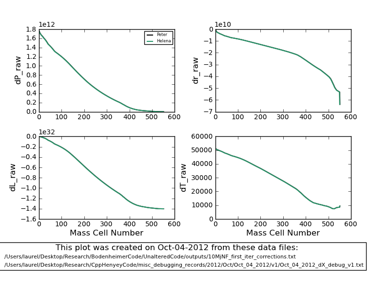
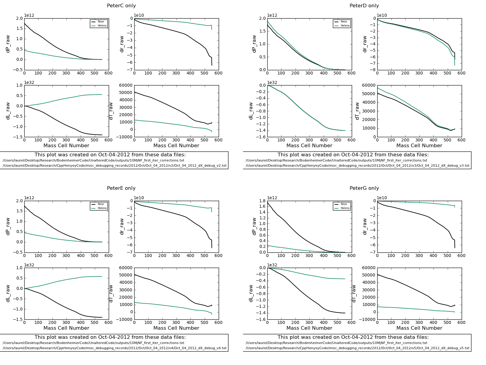
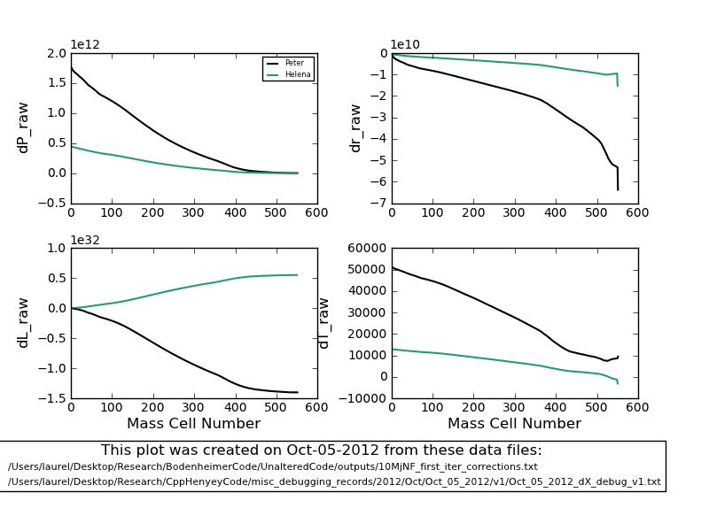

Date
& Time: Oct. 4, 2012
Location:
campus
Computing
context: MachoMac
(/Desktop/Research/CppHenyeyCode/src,
/Desktop/Research/BodenheimerCode/UnalteredCode)
From
last time:
It looks like that E42
difference actually isn't what's driving the dL profile differences
between the codes. It's mostly caused by something in the outermost
D matrix, and the final bit of agreement is driven by something in
the outermost G matrix.
Go through and figure
out which element(s) of the outermost G and D matrices are
responsible for getting the dL profiles to match up.
To get around the
outermost boundary conditions nonesense caused by the algorithm's
pathological sensitivity to very slight changes in the outermost dX
values:
What if I always set
HA[outer] = 0?
What if you alsways
set HA[outer] = HA[outer-1]?
What if you always set
HA[outer] = scale * vars[outer]?
Also, is the outer
boundary condition stuff as much of an issue at Mjup scale models?
Try this out on a ~Mjup test case (try this step out first, to see
if you even need to attempt the ill-conceived plans above).
Short answer, after
doing all the stuff below: yeah, it's still a big issue.
They still seem to
differ by a somewhat constant factor of a few, except for the dL
profiles, which have completely opposite signs.
To
Do Today:

Figure
1:
10 Mjup, no fusion,
results from Helena fed CDEG values from Peter (green) compared with
Peter-generated dX profiles (black, which matches the first profile
so well that you can't even see it in this plot).

Figure
2:
How Helena calculates
its dX profiles when only the C,D,E,or G matrices from Peter's code
are swapped in. This is for the 10 Mjup, no fusion case. Black
curves are the dX values calculated from Peter's code. Green curves
are the dX values calculated from Helena, with the various
Peter-calculated inputs.
Obviously, it's the D
matrix that has the biggest effect on getting the two codes' dX
profiles to agree. Swapping in the G matrix, however, does at least
get the dL profile to the right sign, if not the right magnitude.
For
comparison, here's how the dX profiles compare between the two codes
when they each use their own CDEG calculated values (Figure 3):

Figure
3:
How Helena and Peter's
calculated dX profiles compare when they each use the CDEG values
they generate themselves.
Note: this is for the
10Mjup, no fusion test case.
Also note the dL
profiles that go in opposite directions. That's bad news.
Still
confused as to why swapping in the Peter E-matrix values doesn't fix
anything.
At
j=0, D(row 3, col1) in Helena = 0, in Peter ~10^16 (????!)
The
G values are very different b/w the 2 codes, at both the inner and
outer boundaries, except for the G3/luminosity values
G1:
Pj+1 - Pj + (Mj+1/2 - Mj-12)GMj/4 pi rj^4
Need
to get all of the P, M, r values out at each mass step from each
code
Pj+1
= 8.74986e11
Pj
= 8.75585e11
gravG
= 6.67258e-8
dMj+1/2
= 1.7651e26
dMj-1/2
= 1.7651e29
Mj
= 2.7802e26
rj
= 7.72108e8
The
difference in the G1J values is (at least partly) due to the
slightly different values Peter and I use for the gravitational
const (gravG)
i=2,
k=0 --> very big difference
i=2,
k=3 --> another big difference
In
both cases, the Helena values are HUGE, and the Peter values are
zero.
G3j
= Lj-Lj-1 -(Mj-Mj-1)[Enucj - cpJ(Tj-Tjold/dTime) +
(deltaj/rhoj)(Pj-Pjold/dTime)]
dTime
values
In
Helena: 10^11 seconds
In
Peter: 0.0 seconds
Maybe
that's it then. Let's set dTime = 0.0 seconds in Helena and re-run
this whole thing.
YES,
THAT SOLVES IT!!!! (Well, a significant portion of it at least.)
Peter's code was running with a timestep size of zero seconds, while
my code had been running with a timestep size of 10^11 seconds!!!
When I changed dTime in Helena to zero, here's what I got (Figure
4):

Figure
4
Still
need to fix the problem w/ the G values disagreeing at the outermost
boundary
Also
need to re-test that the dTime value/difference was causing the
differences b/w the dX profiles for the 1Msun, n=3/2 polytrope test
case!
Run
both codes on both test cases for many iterations, but w/ dTime=0,
to see how and if they converge, and to check whether they converge
to the same solutions
Run
both codes for 1 iteration w/ dTime >0
Run
both codes for several iterations, for one timestep, with dTime >
0
Run
both codes for several timesteps
Run
both codes for 1 timestep, w/ a range of dTime values, to see
whether/how the codes' results disagree for very small or large
timesteps
Still
need to sort out this outer boundary condition/G-value discrepancy
b/2 the codes before declaring victory.
For
the 10Mjup, no-fusion test case:
-
|
variable
name/ value
|
In
Peter
|
In
Helena
|
|
Pjmax
|
1.669e8
|
1.669e8
|
|
Tjmax
|
12161.16
|
12161.2
|
|
Ljmax
|
1.402235e32
|
1.40224e32
|
|
Rjmax
|
8.75421e10
|
8.75421e10
|
|
Patm
|
1.6699377e8
|
1.46e8
|
|
Tatm
|
12151.18
|
7.532.03
|
|
Latm(?)
|
N/A
|
N/A
|
|
Ratm
|
1.5036e10
|
1.1185e10
|
We're
not totally out of the woods yet, because you can see that things are
still not lining up at the outer boundary. I'm pretty sure this boils
down to how the outermost G values are calculated, which in turn
depends on how the atmospheric P/T/R/rho values are getting
calculated. Debugging my atmos subroutine is probably going to be a
long, involved, gnarly process that will drag on for about another
month.
But.
This
is a very good and encouraging breakthrough.
To
keep in mind for later: